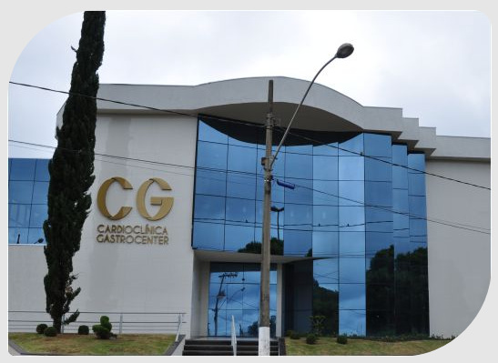

A cardioclinica
Quem somos ?
Localizada em Araxá, Minas Gerais, a
Cardioclínica Gastrocenter é referência em saúde e bem-estar, oferecendo diagnósticos
precisos e tratamentos especializados em mais de 15 áreas médicas.
Nossa equipe
altamente qualificada está pronta para atender você com exames de alta tecnologia nas
áreas de cardiologia, gastroenterologia, dermatologia, oftalmologia e muito mais.
Com horários
flexíveis e diversos convênios, garantimos um atendimento de excelência para cuidar da sua saúde.

PROPÓSITO
Inspirar pessoas a cuidar de pessoas.
MISSÃO
Cuidar de cada pessoa com atenção e carinho, unindo tecnologia avançada e acolhimento humano para transformar a saúde e o bem‑estar de toda a comunidade de Araxá.
VISÃO
Ser o lugar onde cada paciente se sente seguro e valorizado, inspirando confiança por meio de um atendimento inovador, caloroso e sempre focado na qualidade de vida.
VALORES
Nossos valores são a empatia que nos aproxima, o compromisso com a excelência, a inovação que aperfeiçoa nossos cuidados, a ética que guia nossas ações e o carinho que inspira cada gesto.
NOSSA HISTÓRIA
Uma história de compromisso, trabalho e dedicação.
A Cardioclínica Gastrocenter oferece aos seus clientes os mais modernos equipamentos e mais avançada tecnologia para a área médica, o que possibilita realizar maior diversidade de exames, com maior precisão nos resultados. Nossos profissionais são extremamente capacitados
e comprometidos com a excelência no atendimento das expectativas de nossos clientes.
Recursos avançados de informática empregados na área de saúde permitem que os processos internos da clínica sejam totalmente integrados,
desde o início do atendimento à liberação e ao armazenamento dos resultados.
Realizamos todos os exames em um ambiente exclusivo, construído especialmente para atender de forma satisfatória a todos nossos clientes. Respaldados por uma equipe médica composta de profissionais
altamente qualificados.
Disponibilizamos ainda um posto de coleta para exames laboratoriais, em parceria com o Laboratório Carlos Chagas, a fim de agilizar e otimizar o atendimento.
2009 - Informação e prevenção para a comunidade
Lançado em 2009, o projeto leva conhecimento sobre doenças crônicas, tabagismo e alimentação saudável a mais de 500 pessoas. Uma ação de responsabilidade social contínua.
2009 - Informação e prevenção para a comunidade
Lançado em 2009, o projeto leva conhecimento sobre doenças crônicas, tabagismo e alimentação saudável a mais de 500 pessoas. Uma ação de responsabilidade social contínua.
2009 - Informação e prevenção para a comunidade
Lançado em 2009, o projeto leva conhecimento sobre doenças crônicas, tabagismo e alimentação saudável a mais de 500 pessoas. Uma ação de responsabilidade social contínua.